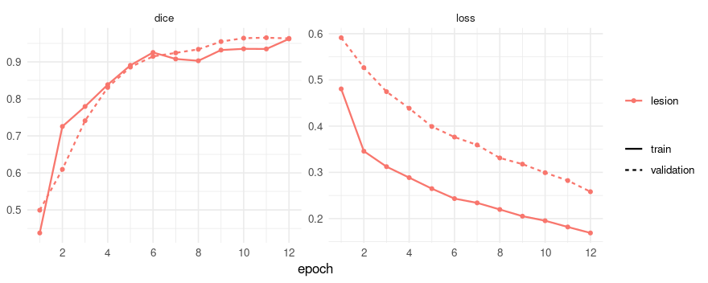
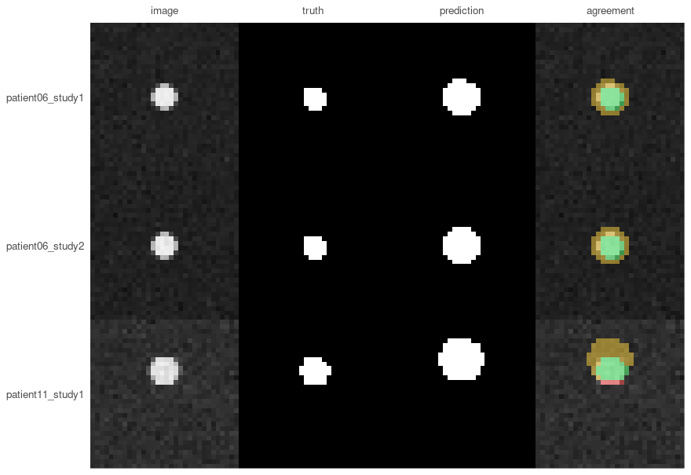

The other vignette works on two-dimensional microscopy. This one is about volumes, which is where medical imaging mostly lives: a CT or an MRI is a stack of slices, and three things that do not exist in 2D decide whether a result means anything.
Voxels have a physical size, and it differs between scans. Slices belong to a patient, so a split that ignores who they came from measures memory rather than generalisation. And a mask has a position in space, without which it cannot be laid over the scan it describes.
The data here is synthetic, generated by the code below, so you can run every line of this without downloading anything or registering anywhere. It is deliberately crude - a ball of soft tissue in air - but it is crude in a way that leaves the three problems above fully intact.
Making something to segment
Twenty-four scans from twelve patients, two each. Each holds one spherical “lesion” in air, and the scans differ in three ways that matter, all of which are ordinary in clinical data:
- slice thickness - half at 1 mm, half at 2.5 mm, so the same anatomy occupies a different number of voxels;
- lesion size - 4 to 12 mm in radius, which on thick slices is the difference between an easy target and two voxels of signal;
- noise - some scans are much noisier than others.
The variety is the point. A synthetic dataset where every case is equally easy would make the per-patient section below look like a formality, and it is not one.
library(RNifti)
root <- file.path(tempdir(), "scans")
dir.create(root, showWarnings = FALSE)
make_scan <- function(patient, study, slice_mm, radius_mm, noise) {
shape <- c(48, 48, 32)
spacing <- c(1, 1, slice_mm)
# Millimetres from the centre of the volume, per voxel.
grid <- as.matrix(expand.grid(x = seq_len(shape[1]), y = seq_len(shape[2]),
z = seq_len(shape[3])))
centre <- (shape + 1) / 2
offset <- sweep(grid, 2, centre) * matrix(spacing, nrow(grid), 3, byrow = TRUE)
# Move the lesion per patient, so the model cannot learn one position and be done.
offset[, 1] <- offset[, 1] - (patient - 6) * 1.5
distance <- sqrt(rowSums(offset^2))
lesion <- array(as.integer(distance <= radius_mm), dim = shape)
# Hounsfield units: air is -1000, soft tissue about 40, plus scanner noise.
scan <- array(ifelse(lesion == 1, 40, -1000) + rnorm(prod(shape), sd = noise), dim = shape)
name <- sprintf("patient%02d_study%d", patient, study)
dir.create(file.path(root, name, "images"), recursive = TRUE, showWarnings = FALSE)
dir.create(file.path(root, name, "masks"), recursive = TRUE, showWarnings = FALSE)
# The datatype goes on the write rather than on asNifti(): asking asNifti() for one returns
# an image in RNifti's internal C representation, whose pixel dimensions cannot then be set.
image <- asNifti(scan)
pixdim(image) <- spacing
writeNifti(image, file.path(root, name, "images", "ct.nii.gz"), datatype = "float")
mask <- asNifti(lesion)
pixdim(mask) <- spacing
writeNifti(mask, file.path(root, name, "masks", "lesion.nii.gz"), datatype = "int16")
name
}
design <- do.call(rbind, lapply(1:12, function(patient) {
do.call(rbind, lapply(1:2, function(study) {
radius_mm <- c(12, 10, 8, 6, 5, 4)[(patient - 1) %% 6 + 1]
key <- make_scan(
patient, study,
slice_mm = if (patient %% 2 == 0) 1 else 2.5,
radius_mm = radius_mm,
noise = c(30, 40, 60, 80)[(patient - 1) %% 4 + 1]
)
# Keeping the truth around: the volume of a sphere is known exactly, which makes it
# possible to ask later whether the model got the *size* right and not only the overlap.
data.frame(key = key, radius_mm = radius_mm,
true_ml = 4 / 3 * pi * radius_mm^3 / 1000)
}))
}))
nrow(design)
#> [1] 24volume_info() reads what the files say about themselves,
through the same pipeline training uses:
scans <- list.files(root, pattern = "ct[.]nii[.]gz$", recursive = TRUE, full.names = TRUE)
info <- volume_info(scans[c(1, 3)])
info[, c("spacing_1", "spacing_2", "spacing_3", "shape_3", "voxel_ml")]
#> spacing_1 spacing_2 spacing_3 shape_3 voxel_ml
#> 1 1 1 2.5 32 0.0025
#> 2 1 1 1.0 32 0.0010Two scans, the same number of slices, and one covers 32 mm of patient where the other covers 80 mm. A voxel in the second is two and a half times the volume of a voxel in the first.
Splitting by patient, not by scan
Each of these patients has two studies. Split the twenty-four scans at random and both studies of some patient land on opposite sides of the split: the model meets that patient in training and is then tested on the same anatomy. Dice comes out several points too high and nothing in the result says so.
platypus_split() takes a pattern that says which part of
a name is the patient, and keeps every patient whole:
split <- platypus_split(
root, file.path(tempdir(), "splits"),
group_by = "^(patient\\d+)_",
fractions = c(0.5, 0.25, 0.25),
seed = 1
)
split
#> platypus split
#> train 12 samples in 6 groups
#> validation 6 samples in 3 groups
#> test 6 samples in 3 groups
#> grouped by '^(patient\d+)_'; no group is in two sets
#> seed 1 - the same inputs give this split againA pattern that matches nothing is an error rather than a fallback, which is the point: a silent fallback to one-group-per-scan would reintroduce exactly the bug the argument exists to prevent.
The specification
Three volume-specific arguments carry the weight here.
labels says the mask is a label map rather than a
picture - which is how every volume format stores masks, and the reason
colormap is not the only way to name classes.
window maps Hounsfield units to 0-1 through a fixed window,
so the same tissue is the same brightness in every scan. And
target_spacing resamples everything to a common voxel size
before cropping to the model’s shape.
spec <- platypus_spec(
data = segmentation_data(
split,
labels = c(0, 1),
window = "soft_tissue",
target_spacing = c(1, 1, 1)
),
models = list(
u_net(
"lesion",
input_shape = c(32, 32, 32),
channels = 1,
blocks = 3,
filters = 16,
epochs = 12,
batch_size = 2,
loss = loss_dice(),
metrics = list(metric_dice(include_background = FALSE)),
augmentation = list(
augment("HorizontalFlip", p = 0.5),
augment("CubicSymmetry", p = 0.5)
)
)
)
)
spec
#> platypus specification
#> data : /tmp/RtmpkbOuuB/splits/train.csv
#> classes : 0
#> models : 1
#> lesion u_net 32x32x32, dice, 12 epochsinput_shape has three entries, and that is the only
thing that makes this a 3D run. Nothing else in the specification is
different - the same losses, the same metrics, the same tiling if you
want it.
Not every augmentation works on a volume. albumentations supports them unevenly, so ask rather than guess:
length(available_augmentations())
#> [1] 130
length(available_augmentations(rank = 3))
#> [1] 97
head(setdiff(available_augmentations(), available_augmentations(rank = 3)), 4)
#> [1] "AdditiveNoise" "BBoxSafeRandomCrop" "ChannelDropout"
#> [4] "ChromaticAberration"A transform from that difference is refused by name when the run starts, rather than raising something from inside the library an hour in.
Training
fit <- platypus_fit(spec, verbose = FALSE)
fit
#> platypus fit
#> models : lesion
#> device : NVIDIA GeForce GTX 1070 (torch 2.7.1+cu126)
#> epochs : lesion=12
#> next : evaluate(fit), predict(fit, "lesion")
plot(fit)
Scores per patient, not per dataset
evaluate() gives one row per model: one number for the
whole validation set.
evaluate(fit)[, c("model", "loss_function", "dice", "epochs_run")]
#> model loss_function dice epochs_run
#> 1 lesion dice 0.9633882 12That number hides the distribution, and the distribution is usually
the finding. With group_by, each row is a patient - their
slices pooled, the way a volume would be:
cases <- evaluate_cases(fit, group_by = "^(patient\\d+)_")
cases
#> platypus scores by group (3 rows)
#> group dice
#> patient06 0.9800181
#> patient11 0.9230408
#> patient10 0.9870523
summary(cases)
#> metric n mean sd median min max worst_group
#> 1 dice 3 0.9633704 0.03510311 0.9800181 0.9230408 0.9870523 patient11The worst_group column is the one that makes this
actionable. A mean of any value with a minimum far below it is a model
with a failure mode, and the mean is where it hides.
Looking at a slice
A volume cannot honestly be shown as one picture, so
plot_masks() asks which plane to draw.
slice = "middle" is the sensible first look:
validation <- split_files(split, "validation")
images <- read_images(validation$images, size = c(32, 32, 32), channels = 1)
truth <- read_masks(validation$masks, labels = c(0, 1), size = c(32, 32, 32))
prediction <- predict(fit, split = "validation")
plot_masks(
images, prediction = prediction, truth = truth,
colormap = binary_colormap, slice = "middle",
which = 1:3, labels = validation$key[1:3]
)
Millilitres, not voxels
The size of a finding is reported in millilitres. A voxel count means
nothing outside the scanner that produced it - the same lesion is 4000
voxels on one machine and 12000 on another - and resampling is what
makes the conversion trivial: at
target_spacing = c(1, 1, 1) a voxel is exactly one cubic
millimetre.
predicted_ml <- vapply(
seq_len(dim(prediction)[1]),
function(i) mask_volume(prediction[i, , , ], spacing = c(1, 1, 1), class = 2),
numeric(1)
)
sizes <- merge(
data.frame(key = validation$key, predicted_ml = round(predicted_ml, 2)),
design[, c("key", "true_ml")], by = "key"
)
sizes$error_pct <- round(100 * (sizes$predicted_ml - sizes$true_ml) / sizes$true_ml)
sizes
#> key predicted_ml true_ml error_pct
#> 1 patient06_study1 0.27 0.2680826 1
#> 2 patient06_study2 0.27 0.2680826 1
#> 3 patient10_study1 0.90 0.9047787 -1
#> 4 patient10_study2 0.90 0.9047787 -1
#> 5 patient11_study1 0.53 0.5235988 1
#> 6 patient11_study2 0.52 0.5235988 -1These lesions are spheres, so the true volume is known exactly - which is worth doing in a synthetic example, because it asks a question Dice cannot. The overlap scores above were around 0.88, respectable by any standard; the volumes are -1% to 1% out.
That is not a contradiction. Dice is dominated by the interior of an object and forgiving about its boundary, and for a small lesion the boundary is most of it. A model that draws every lesion one voxel too wide scores well and reports a volume that is wrong by a third. If the question is is there a lesion, the Dice is the relevant number. If it is has it grown since March, this table is, and the two do not follow from each other.
Writing a mask back onto its scan
save_volumes() writes a prediction as NIfTI carrying the
affine of the scan it came from. Without that affine a mask cannot be
laid over its scan by any viewer or registration tool - it either lands
in the wrong place or is refused, and nothing about the file looks
wrong.
Carrying the affine means the mask has to be on the same grid
as the scan, and after resampling it is not: these scans are 48
x 48 x 32 voxels while the model works at 32 x 32 x 32.
space = "source" maps each prediction back out of the
model’s grid onto the scan’s, undoing the resampling and the crop:
masks <- predict(fit, split = "validation", space = "source")
length(masks)
#> [1] 6
dim(masks[[1]])
#> [1] 48 48 32A list rather than an array, because scans differ in size and a stack needs one shape. That is the API being explicit rather than resizing them to match, which is how a mask ends up describing anatomy it was not computed from.
Names come from the reference files unless you say otherwise, and
here every scan is called ct.nii.gz inside its own
directory - so the masks would all be written to one name. That is an
error rather than five silently lost files, and the case keys are what
to use instead:
written <- save_volumes(masks, file.path(tempdir(), "predictions"),
reference = validation$images, names = validation$key)
basename(written)
#> [1] "patient06_study1.nii.gz" "patient06_study2.nii.gz"
#> [3] "patient11_study1.nii.gz" "patient11_study2.nii.gz"
#> [5] "patient10_study1.nii.gz" "patient10_study2.nii.gz"The written masks carry the scans’ geometry, which is what makes them open on top of them:
volume_info(written)[, c("spacing_1", "spacing_3", "shape_1", "shape_3")]
#> spacing_1 spacing_3 shape_1 shape_3
#> 1 1 1.0 48 32
#> 2 1 1.0 48 32
#> 3 1 2.5 48 32
#> 4 1 2.5 48 32
#> 5 1 1.0 48 32
#> 6 1 1.0 48 32Two things are lost on the way back and it is worth knowing which.
Interpolation softens a boundary, so the mask is slightly smoother than
the model drew it. And where reading cropped anatomy away, the mask
returns padded with background - which means not examined, not
nothing there. If that distinction matters, give the model an
input_shape that covers the anatomy.
DICOM, which is how the data usually arrives
The scans above are NIfTI because that is what research datasets
ship. Data out of a hospital arrives as a directory of DICOM files per
series, and platypus reads those as volumes too - sorting
them by their position in the patient rather than by filename, which is
the difference between a scan and a shuffled deck.
Point the specification at directories of slices and nothing else
changes. Before training, though, run the export past
series_report():
report <- series_report(list.dirs("dicom_export", recursive = FALSE))
report[!report$ok, c("path", "problem")]It reads no pixels and returns one row per directory, because an archive export of a hundred cases will contain a few with a missing slice, duplicated files, or two series sitting in one folder - and a missing slice does not shorten a volume, it moves everything past the gap.
What this leaves out
Resampling is offered, not imposed. Several volumes per sample - one
per modality, as BraTS ships - works through channels_from,
where the order is stated rather than inferred.
Object detection, ensembling and pretrained encoders are not here at all.
platypus_device()
#> torch : 2.7.1+cu126
#> cuda build : 12.6
#> device : NVIDIA GeForce GTX 1070